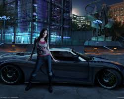
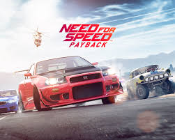
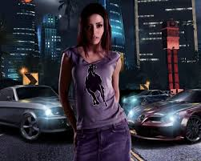
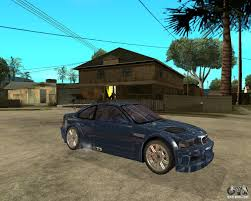

Casi todos los juegos de la serie NFS emplean las mismas reglas fundamentales y mecánicas similares:
el jugador controla un coche de carreras en una variedad de carreras,
con el objetivo de ganar la carrera. En el modo torneo/carrera, el jugador debe ganar una serie de carreras para desbloquear vehículos y pistas.
Antes de cada carrera, el jugador elige un vehículo, y tiene la opción de seleccionar si la transmisión es automática o manual.
Todos los juegos de la serie tienen alguna forma de modo multijugador que permite a los jugadores competir entre sí a través de una pantalla dividida,
una red LAN o Internet.Aunque los juegos comparten el mismo nombre, su tono y enfoque pueden variar significativamente.


La serie Need for Speed fue desarrollada originalmente por Distinctive Software un estudio de videojuegos con sede en Vancouver, Canadá.
Antes de la compra de Electronic Arts de la compañía en 1991, había creado populares juegos como: 4D Boxing (1991), Stunts (1990),
Test Drive (1987) y Mission Impossible (1991).Test Drive y Test Drive II: The Duel fueron los juegos base principales con los que se inició la saga Need for Speed.
Sin embargo, la empresa (DSI) fue comprada en 1991 por 11 millones de dólares, con lo que se le cambió el nombre por Electronic Arts Canada.6 Actualmente,
Distinctive Software se conoce como EA Canada.

El primer Need for Speed fue lanzado para 3DO en 1994 con versiones lanzadas para la PC (DOS) (1995),
PlayStation y Saturn (1996), que salieron poco después.
The Need for Speed y su edición especial eran los únicos juegos de la serie que soportaban DOS,
y las versiones posteriores para la PC se ejecutan sólo en Windows.
La primera entrega de The Need for Speed fue el único intento serio de la serie para proporcionar una simulación realista
de los elementos del manejo de un automóvil a través de la colaboración directa con los miembros de Road & Track.
Electronic Arts dejó la dinámica de manejo a los pilotos experimentados de la revista automotriz
para que adaptasen el comportamiento del vehículo, incluyendo el sobre realista sobreviraje/subviraje que sigue siendo impresionante
décadas más tarde, así como los sonidos de las palancas de cambios y otras funciones. El juego contenía datos de vehículos con comentarios hablados,
varias imágenes de "montaje de revista" de cada coche y videos cortos que destacaban los vehículos con algo de música.
La mayoría de los coches y pistas están disponibles al principio del juego, y el objetivo es desbloquear el resto del contenido bloqueado ganando torneos.
Esta versión ofreció persecuciones por los coches de la policía, un tema popular a través de la serie.

La gigantesca popularidad del juego también repercutió
en sus usuarios ya que el juego también difundió y publicitó el tuning en los vehículos,
pero igualmente es criticado ya que según dicen algunos expertos
«incita las carreras ilegales o picadas».
Así mismo ha considerado a muchos vehículos (sobre todo los de sus protagonistas y antagonistas) de cierto culto,
sobre todo con el BMW M3 GTR E46 del Jugador, el Chevrolet Corvette C6 Z06 del sargento/cazarrecompensas Cross,
ambos de Need for Speed: Most Wanted y Need for Speed: Carbon, el Ford Mustang GT de Razor, el Audi Le Mans Quattro de Darius,
antagonistas de Most Wanted y Carbon respectivamente, el Nissan 350Z de Rachel de NFS Underground 2 y el Nissan Skyline GT-R R34
que se ve en el intro de Need For Speed Underground 2, entre otros.